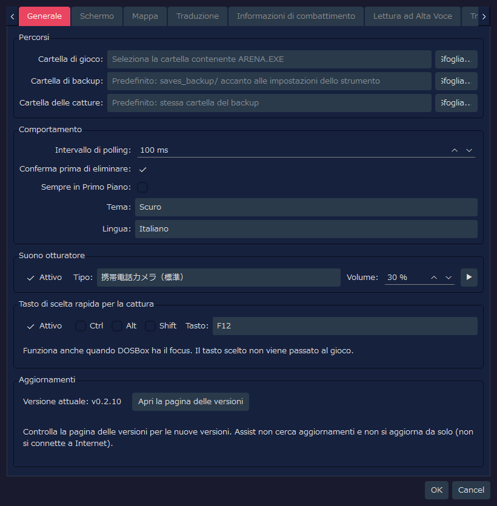
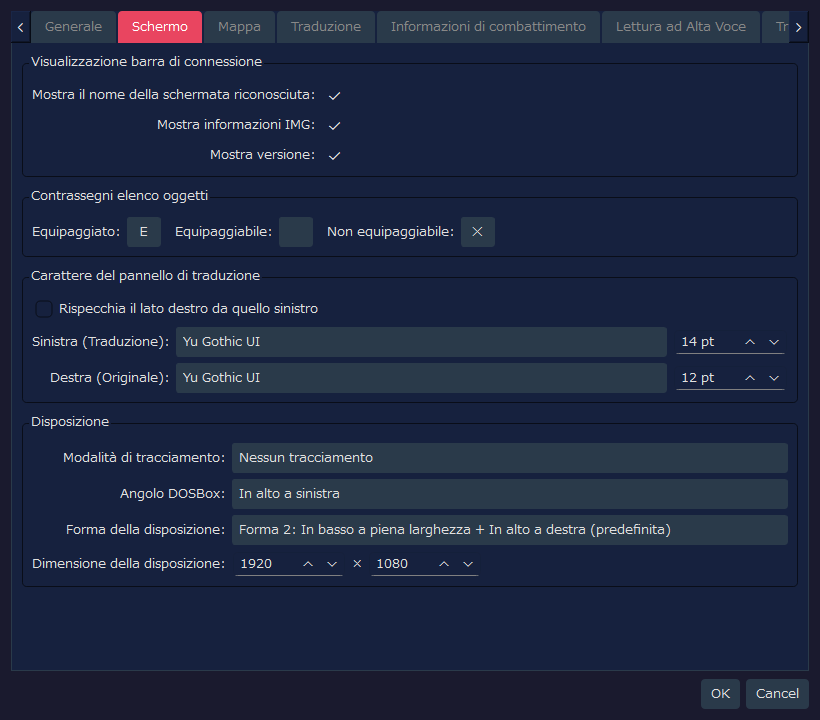
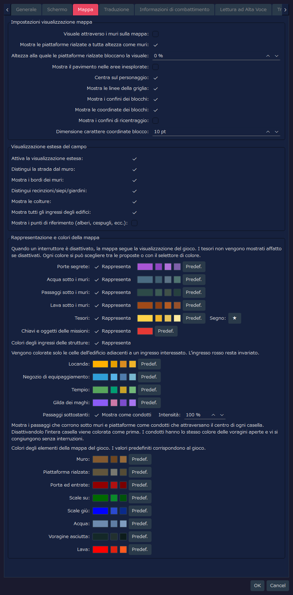
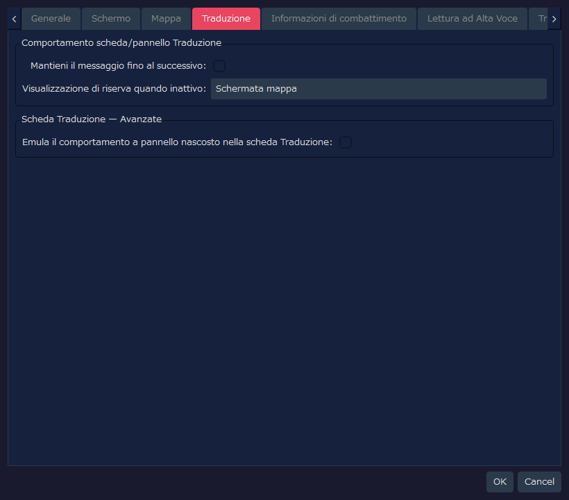
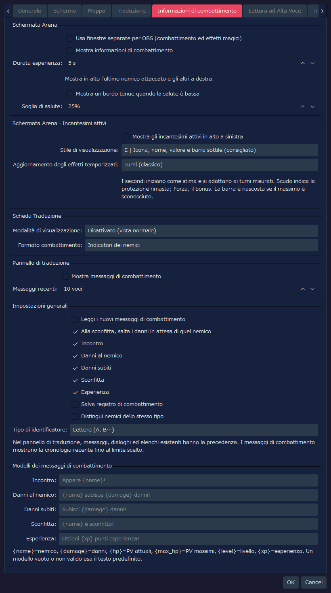
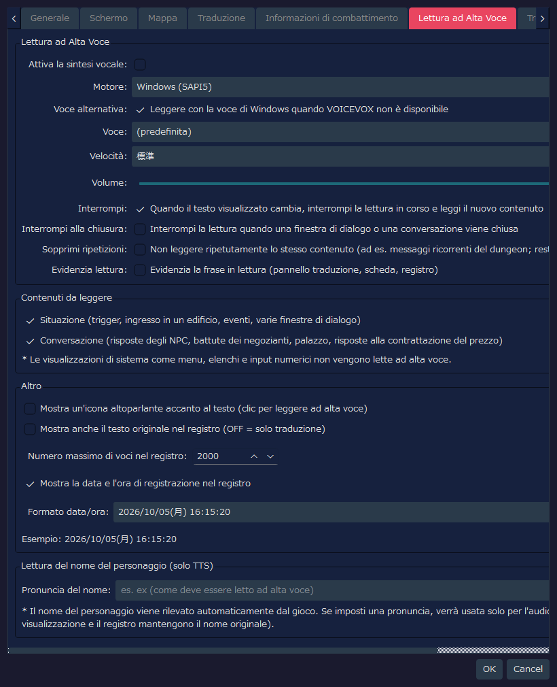
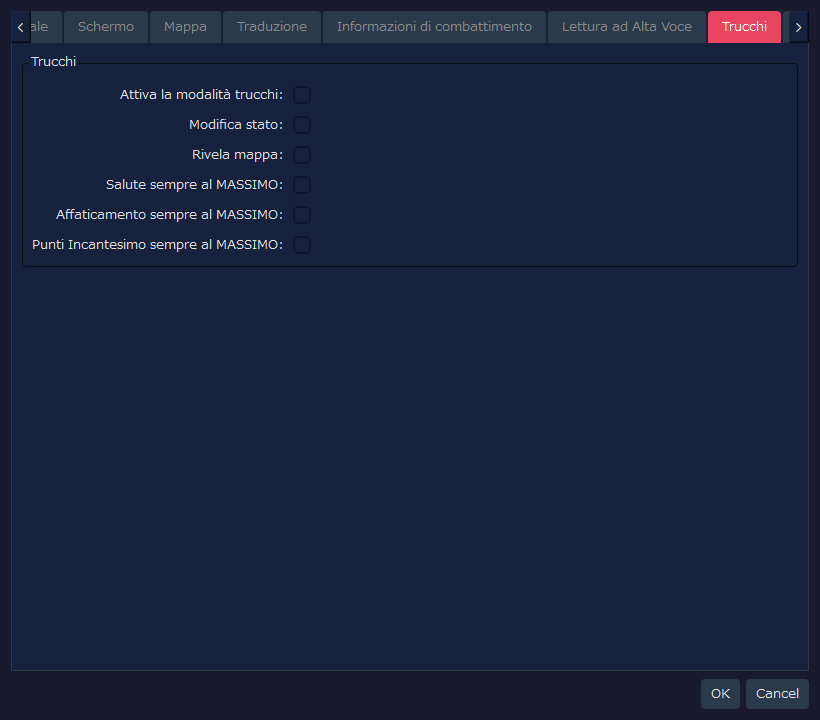
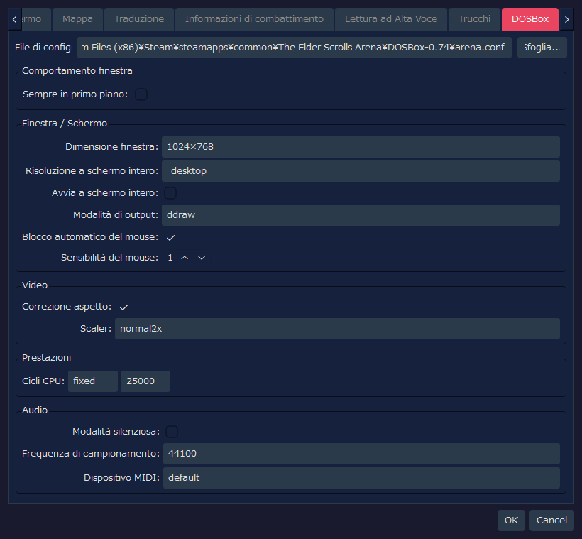

RTESArenaAssist — Guida dettagliata alla finestra Impostazioni
Questa pagina riporta le schermate di ogni scheda della finestra Impostazioni di RTESArenaAssist e la descrizione di ogni elemento dell'interfaccia.
Le immagini mostrano la finestra Impostazioni con le impostazioni iniziali nella tua lingua di visualizzazione e con il tema «Scuro» predefinito.
I valori della scheda DOSBox riflettono non solo il file di impostazioni di Assist, ma anche il risultato della lettura di arena.conf nel percorso predefinito. Per questo, se arena.conf è diverso nel tuo ambiente, cambiano anche i valori mostrati.
Indice
Scheda Generale
È la scheda in cui impostare percorsi, comportamento di base, suono dell'otturatore e tasto di scelta rapida per la cattura, e in cui controllare la tua versione.

Percorsi
| Etichetta mostrata | Valore iniziale | Descrizione |
|---|
Cartella di gioco: | Vuoto | La cartella in cui si trovano ARENA.EXE e i file di salvataggio di Arena. Se non è impostata, non si possono usare la gestione dei salvataggi e la lettura dei dati di gioco |
Cartella di backup: | Vuoto | Dove salvare i backup dei salvataggi. Se è vuoto, si usa saves_backup/ accanto al file di impostazioni dello strumento |
Cartella delle catture: | Vuoto | Dove salvare gli screenshot. Se è vuoto, si usa la stessa cartella del backup |
Sfoglia... | - | Seleziona ciascuna cartella |
Comportamento
| Etichetta mostrata | Valore iniziale | Descrizione |
|---|
Intervallo di polling: | 100 ms | Intervallo con cui si controllano la schermata di DOSBox e lo stato della memoria. Il valore iniziale è breve per cogliere più facilmente i messaggi brevi |
Conferma prima di eliminare: | ON | Mostra una finestra di conferma quando si eliminano catture o backup |
Sempre in Primo Piano: | OFF | Mostra la finestra principale di Assist davanti alle altre finestre |
Tema: | Scuro | Sceglie il tema dei colori dell'interfaccia |
Lingua: | Automatica (sistema) | La lingua dell'interfaccia. Se non è impostata, viene determinata automaticamente in base alla lingua del sistema; la modifica ha effetto dopo il riavvio dell'applicazione |
Suono otturatore
| Etichetta mostrata | Valore iniziale | Descrizione |
|---|
Attivo | ON | Riproduce un effetto sonoro quando si salva uno screenshot |
Tipo: | 携帯電話カメラ（標準） (fotocamera di un telefono cellulare, standard) | Il suono dell'otturatore da riprodurre. Si può scegliere tra standard, versione breve, doppio, acuti accentuati e morbido (i nomi nell'elenco sono mostrati in giapponese in tutte le lingue) |
Volume: | 30 % | Il volume di riproduzione del suono dell'otturatore |
▶ | - | Riproduce un'anteprima del suono dell'otturatore selezionato |
Tasto di scelta rapida per la cattura
Puoi salvare una cattura semplicemente premendo il tasto, mentre il focus resta sulla schermata di gioco (DOSBox). Serve per catturare i messaggi che scompaiono dopo pochi secondi.
| Voce | Valore predefinito | Descrizione |
|---|
Attivo | ON | Usa il tasto di scelta rapida per catturare |
Ctrl / Alt / Shift | OFF | Attivali (ON) se vuoi combinare dei tasti modificatori |
Tasto: | F12 | Il tasto da usare. Si può scegliere tra F5–F12, PrintScreen, Pause, ScrollLock, Insert, Home, End, PageUp e PageDown |
- Il tasto premuto non viene passato al gioco. I tasti usati dal gioco o da DOSBox (F1 / F3 / F4 / F8, Ctrl+F5–F12, Alt+F12, Alt+Pause) non si possono scegliere
- Se un'altra applicazione usa lo stesso tasto come scorciatoia, finché questa applicazione è in esecuzione la scorciatoia di quell'altra applicazione non funziona. Scegliendo un tasto diverso le due cose possono coesistere
- Se non è stato possibile registrare il tasto, viene indicato nella barra di stato. Anche in quel caso puoi catturare con il pulsante della fotocamera nella barra degli strumenti
Aggiornamenti
| Etichetta mostrata | Valore iniziale | Descrizione |
|---|
Versione attuale: | - | La versione di Assist che stai usando |
Apri la pagina delle versioni | - | Apre nel browser la pagina delle versioni di Assist (l'elenco di Releases). Per sapere se c'è una versione nuova, controlla qui |
Assist non si connette a Internet, quindi non controlla gli aggiornamenti e non si aggiorna da solo.
Scheda Schermo
È la scheda in cui impostare la barra di connessione, i contrassegni dell'elenco oggetti, il carattere del pannello di traduzione e la disposizione.

Visualizzazione barra di connessione
| Etichetta mostrata | Valore iniziale | Descrizione |
|---|
Mostra il nome della schermata riconosciuta: | ON | Mostra nella barra di connessione il nome della schermata attualmente riconosciuta |
Mostra informazioni IMG: | ON | Mostra nella barra di connessione le informazioni sull'IMG rilevato |
Mostra versione: | ON | Mostra la versione dell'applicazione nella barra di connessione e nella barra di stato |
Contrassegni elenco oggetti
| Etichetta mostrata | Valore iniziale | Descrizione |
|---|
Equipaggiato: | Ｅ | Il contrassegno di un carattere mostrato a sinistra degli oggetti equipaggiati |
Equipaggiabile: | Vuoto | Il contrassegno degli oggetti equipaggiabili. Il valore iniziale è vuoto, quindi non viene mostrato nulla |
Non equipaggiabile: | ✕ | Il contrassegno di un carattere mostrato a sinistra degli oggetti che non si possono equipaggiare |
Carattere del pannello di traduzione
| Etichetta mostrata | Valore iniziale | Descrizione |
|---|
Rispecchia il lato destro da quello sinistro | OFF | Se attivo (ON), il carattere e la dimensione del lato dell'originale diventano uguali a quelli del lato della traduzione |
Sinistra (Traduzione): | Predefinito dell'app / 14 pt | Il carattere e la dimensione usati per il testo tradotto. Se il nome del carattere non è stato salvato, viene scelto il carattere predefinito dell'app nell'ambiente di esecuzione |
Destra (Originale): | Predefinito dell'app / 12 pt | Il carattere e la dimensione usati per il testo originale in inglese. Poiché la sincronizzazione è OFF, si possono impostare separatamente da quelli del lato della traduzione |
Disposizione
| Etichetta mostrata | Valore iniziale | Descrizione |
|---|
Modalità di tracciamento: | Nessun tracciamento | Sceglie se, quando si sposta una delle due finestre (DOSBox o Assist), l'altra la deve seguire |
Angolo DOSBox: | In alto a sinistra | L'angolo dello schermo di riferimento in cui posizionare DOSBox con la disposizione immediata e nella modalità layout |
Forma della disposizione: | Forma 2: In basso a piena larghezza + In alto a destra (predefinita) | La forma di suddivisione tra DOSBox e l'area dei pannelli di Assist. La forma 2 è il layout standard, che usa l'alto a destra e il basso a piena larghezza |
Dimensione della disposizione: | 1920 × 1080 | La dimensione dell'area complessiva nella modalità layout |
Scheda Mappa
È la scheda in cui impostare la mappa di esplorazione e la visualizzazione estesa del campo.

Impostazioni visualizzazione mappa
| Etichetta mostrata | Valore iniziale | Descrizione |
|---|
Visuale attraverso i muri sulla mappa: | OFF | Se OFF, le aree non confermate oltre i muri non vengono registrate sulla mappa. Se ON, è più vicino all'Arena originale e vengono registrate anche le aree oltre i muri |
Mostra le piattaforme rialzate a tutta altezza come muri: | ON | Mostra con il colore dei muri le piattaforme rialzate che occupano tutto lo spazio dal pavimento al soffitto. Cambia solo il modo di distinguerle nella visualizzazione e non influisce su come viene bloccata la visuale. Le piattaforme rialzate non a tutta altezza restano mostrate come piattaforme rialzate |
Altezza alla quale le piattaforme rialzate bloccano la visuale: | 0 % | Considerando l'altezza del soffitto come 100%, le piattaforme rialzate la cui sommità raggiunge o supera questa altezza bloccano la visuale sulla mappa. Con 0%, tutte le piattaforme rialzate bloccano la visuale |
Mostra il pavimento nelle aree inesplorate: | OFF | Se OFF, mostra il colore del pavimento solo per le celle già rivelate, nascondendo la forma dell'area non esplorata. Se ON, mostra l'intera mappa con il colore di sfondo della pergamena |
Centra sul personaggio: | ON | Quando il personaggio si muove, la mappa si centra automaticamente su di lui. Da fermo si può spostare la mappa a mano |
Mostra le linee della griglia: | ON | Mostra le linee della griglia ai confini delle celle |
Mostra i confini dei blocchi: | ON | Nella mappa del campo evidenzia i confini dei blocchi, in unità di 64 caselle |
Mostra le coordinate dei blocchi: | ON | Mostra le coordinate di ogni blocco sulla mappa del campo, per aiutare a capire la posizione |
Mostra i confini di ricentraggio: | OFF | Mostra con una linea tratteggiata i confini di ricentraggio della mappa del campo. È una visualizzazione ausiliaria per l'indagine e il controllo della posizione |
Dimensione carattere coordinate blocco: | 10 pt | La dimensione del carattere delle etichette delle coordinate dei blocchi |
Visualizzazione estesa del campo
| Etichetta mostrata | Valore iniziale | Descrizione |
|---|
Attiva la visualizzazione estesa: | ON | L'interruttore principale della visualizzazione estesa della mappa del campo. Se OFF, la visualizzazione si avvicina alla mappa automatica del gioco |
Distingui la strada dal muro: | ON | Disegna con colori diversi le strade percorribili e le parti non percorribili, come edifici e muri |
Mostra i bordi dei muri: | ON | Mostra il contorno dei muri e il terreno di tipo edge (bordo) |
Distingui recinzioni/siepi/giardini: | ON | Distingue con linee di collegamento il terreno di tipo edge (bordo) come recinzioni, siepi e giardini |
Mostra le colture: | ON | Mostra le colture, come il mais e i campi coltivati, con colori o contrassegni dedicati |
Mostra tutti gli ingressi degli edifici: | ON | Mostra in rosso anche gli ingressi di case, taverne, templi e porte della città. Gli ingressi di cripte, torri e dungeon sono rossi indipendentemente da questa impostazione |
Mostra i punti di riferimento (alberi, cespugli, ecc.): | OFF | Sovrappone contrassegni semplificati per alberi, cespugli, rocce, tombe, rovine e così via. Poiché sono numerosi e rendono la mappa più difficile da leggere, il valore iniziale è OFF |
Rappresentazione e colori della mappa
La mappa del gioco disegna senza distinguerli, per esempio, i passaggi che corrono sotto i muri. Qui imposti se disegnarli distinguendoli e il colore di ogni elemento. Se disattivi «Rappresenta» in una riga, quell'elemento torna alla stessa visualizzazione della mappa del gioco (per i tesori, se è disattivato non viene mostrato nulla).
| Etichetta mostrata | Valore iniziale | Descrizione |
|---|
Porte segrete: | ON | Mostra con un colore dedicato le porte segrete scoperte. Finché non vengono scoperte restano muri |
Acqua sotto i muri: | ON | Mostra con un colore dedicato i canali d'acqua che passano sotto i muri. Non vengono mostrati finché non li fai emergere passandoci davvero |
Passaggi sotto i muri: | ON | Mostra i passaggi che corrono sotto i muri. Non vengono mostrati finché non li fai emergere passandoci davvero |
Lava sotto i muri: | ON | Mostra con un colore dedicato la lava che passa sotto i muri. Non viene mostrata finché non la fai emergere passandoci davvero |
Tesori: | ON | Sovrappone un contrassegno nei punti in cui hai ottenuto un tesoro. Nel campo a destra puoi cambiare il carattere del contrassegno. Quando «Rivela mappa» nella scheda Trucchi è ON, mostra tutti i punti in cui c'è un tesoro, indipendentemente dal fatto che tu lo abbia ottenuto o no |
Chiavi e oggetti delle missioni: | ON | Tra i tesori, mostra con un altro colore i contrassegni delle chiavi e degli oggetti delle missioni. Se OFF, vengono mostrati con lo stesso colore dei tesori. Se i tesori sono OFF, non vengono mostrati |
Colori degli ingressi delle strutture: | ON | Nella mappa della città, sostituisce con un colore per ogni struttura le celle del colore degli edifici adiacenti agli ingressi di locande, negozi di equipaggiamento, templi e gilde dei maghi. Il colore degli ingressi rossi non cambia. Il colore di ciascuna struttura si può cambiare nei campi sottostanti |
Passaggi sottostanti: | Mostra come condotti / intensità 100 % | Mostra i passaggi che corrono sotto muri e piattaforme rialzate come condotti che attraversano il centro delle celle. Se OFF, si colora l'intera cella come prima. Il colore dei condotti è lo stesso dei fori e si congiunge ai fori senza interruzioni. Abbassando Intensità i condotti diventano più discreti |
Facendo clic sul campione di colore a destra di ogni voce puoi scegliere un colore qualsiasi. I piccoli pulsanti accanto sono colori proposti, facili da scegliere, e Predef. è il pulsante che ripristina il colore originale. Con lo stesso metodo puoi cambiare anche i colori degli elementi originali del gioco: muri, piattaforme rialzate, porte e ingressi, scale (su e giù), acqua, voragini asciutte e lava (per impostazione predefinita sono gli stessi colori del gioco).
Scheda Traduzione
È la scheda in cui impostare la visualizzazione ausiliaria del pannello di traduzione e della scheda Traduci.

Comportamento scheda/pannello Traduzione
| Etichetta mostrata | Valore iniziale | Descrizione |
|---|
Mantieni il messaggio fino al successivo: | OFF | Indica se i messaggi dei trigger e delle interazioni con gli oggetti restano nel pannello di traduzione fino all'arrivo del messaggio successivo |
Visualizzazione di riserva quando inattivo: | Schermata mappa | Sceglie che cosa mostrare in tutta la scheda Traduci quando si sta esplorando e non c'è un testo tradotto. Per impostazione predefinita ha la precedenza la schermata della mappa |
Scheda Traduzione — Avanzate
| Etichetta mostrata | Valore iniziale | Descrizione |
|---|
Emula il comportamento a pannello nascosto nella scheda Traduzione: | OFF | Se ON, mostra nella scheda Traduci i risultati della traduzione e i messaggi di dialogo, come quando il pannello di traduzione è nascosto. È un'impostazione avanzata per la verifica |
Scheda Informazioni di combattimento
Imposta separatamente dove mostrare il combattimento e gli incantesimi attivi. Le nuove funzioni di visualizzazione, lettura ad alta voce e salvataggio sono OFF per impostazione predefinita. I valori salvati dalle precedenti versioni di sviluppo vengono mantenuti così come sono. I testi mostrati sono disponibili in giapponese, inglese, spagnolo, tedesco, francese, italiano e russo.

Schermata Arena
| Voce | Valore iniziale | Descrizione |
|---|
Usa finestre separate per OBS (combattimento ed effetti magici) | OFF | Riunisce le informazioni di combattimento e gli incantesimi attivi in un'unica finestra selezionabile con l'acquisizione finestra di OBS |
Mostra informazioni di combattimento | OFF | Mostra in alto nella schermata l'ultimo avversario con cui si è scambiato un attacco, già incontrato e attualmente in vista, e a destra gli altri nemici vivi già incontrati, anche se fuori dalla visuale. Puoi controllare salute, fatica, Punti Incantesimo e i danni inflitti o le sconfitte. I danni subiti vengono mostrati sul bordo inferiore dell'area di esplorazione |
Durata esperienza: | 5 s | Mostra in basso a destra l'esperienza nel momento in cui la ottieni e fa scomparire ogni riquadro dopo il numero di secondi indicato. Se ne ottieni altra di seguito, i riquadri più vecchi vengono spostati a sinistra (da 1 a 60 secondi) |
Mostra un bordo tenue quando la salute è bassa: | OFF | Quando la salute scende alla percentuale indicata o al di sotto, fa lampeggiare debolmente il bordo della schermata di esplorazione. Si può attivare anche senza usare la visualizzazione dei nemici delle informazioni di combattimento |
Soglia di salute: | 25% | La percentuale da cui inizia la visualizzazione del bordo per salute bassa (da 1 a 99% della salute massima) |
La visualizzazione dei danni subiti scompare da sola circa 5 secondi dopo che si sono verificati. La visuale dei nemici usa lo stesso criterio in qualsiasi luogo. Se la mappa o le coordinate non sono determinate, i nemici non vengono mostrati per congettura.
Per registrare con OBS, attiva questa impostazione, poi in «Acquisizione finestra» scegli la finestra «RTESArenaAssist オーバーレイ» (il nome della finestra è lo stesso in tutte le lingue; la seconda parola significa «overlay»), consenti la trasparenza e sovrapponilo all'immagine del gioco. Le informazioni di combattimento e gli incantesimi attivi compaiono nella stessa sorgente.
Schermata Arena · Incantesimi attivi
| Voce | Valore iniziale | Descrizione |
|---|
Mostra gli incantesimi attivi in alto a sinistra | OFF | Mostra lo stato di Luce, Scudo, Forza potenziata, Resistenza al fuoco e Levitazione |
Stile di visualizzazione: | E | Si sceglie tra A «Nome e valore residuo», B «Nome e barra orizzontale», C «Icona e barra orizzontale», D «Icona e ombra in senso orario», E «Icona, nome, valore e barra sottile» e F «Riquadro compatto» |
Aggiornamento degli effetti temporizzati: | Turni (classico) | Sceglie se aggiornare Luce, Resistenza al fuoco e Levitazione per turni o con un numero approssimativo di secondi, ogni secondo. I secondi vengono corretti in base all'intervallo di avanzamento nel gioco, quindi se la velocità di avanzamento cambia, per esempio con DETAIL, non è detto che il rapporto sia fisso |
Scudo indica la protezione rimasta e Forza potenziata il valore di aumento. Nelle connessioni a partita già in corso, in cui non si può verificare il valore massimo, la barra può essere omessa. La visualizzazione in secondi è approssimativa, e la fine dell'effetto segue lo stato nel gioco.
Combattimento nella scheda Traduzione
| Voce | Valore iniziale | Descrizione |
|---|
Modalità di visualizzazione: | Disattivato (vista normale) | Si sceglie tra mantenere la visualizzazione normale / usare insieme la visualizzazione normale e le informazioni di combattimento / mostrare le informazioni di combattimento a tutto schermo |
Formato combattimento: | Indicatori dei nemici | Se mostri le informazioni di combattimento, sceglie se come testo o come indicatori dei nemici |
Combattimento nel pannello di traduzione
| Voce | Valore iniziale | Descrizione |
|---|
Mostra messaggi di combattimento | OFF | Mostra nel pannello di traduzione i testi del combattimento. Se compaiono i tradizionali messaggi, conversazioni o elenchi, hanno la precedenza |
Messaggi recenti: | 10 voci | Mostra da 1 a 50 testi di combattimento recenti. Quando si supera il numero, i testi più vecchi vengono tolti e ne vengono aggiunti di nuovi |
Impostazioni generali e messaggi
| Voce | Valore iniziale | Descrizione |
|---|
Leggi i nuovi messaggi di combattimento | OFF | Se la lettura ad alta voce è attivata in generale, legge i nuovi testi di combattimento in ordine di comparsa. Non esclude i testi identici recenti e con il danno successivo non interrompe la lettura precedente |
Alla sconfitta, salta i danni in attesa di quel nemico | ON | Alla sconfitta, interrompe la lettura in corso e salta quella non ancora letta dei danni inflitti e subiti con quel nemico. La lettura degli altri nemici continua |
Salva registro di combattimento | OFF | Salva la cronologia del combattimento separatamente dal registro normale. L'interruttore nella scheda Registro viene mostrato solo se ci sono dati registrati |
Distingui nemici dello stesso tipo | OFF | Solo quando ci sono più nemici con lo stesso nome, aggiunge dopo il nome un segno per distinguerli |
Tipo di identificatore: | Lettere (A, B…) | Si sceglie tra A, B… e 1, 2… |
Modelli dei messaggi di combattimento | Il testo predefinito di ogni lingua | Modifica i testi di incontro, danni al nemico, danni a se stessi, sconfitta ed esperienza. Un campo vuoto o un segnaposto non utilizzabile torna al testo predefinito |
Scheda Lettura ad Alta Voce
È la scheda in cui impostare la lettura ad alta voce dei testi tradotti, che cosa leggere, la visualizzazione del registro e la pronuncia del nome del personaggio.

Lettura ad Alta Voce
| Etichetta mostrata | Valore iniziale | Descrizione |
|---|
Attiva la sintesi vocale: | OFF | Attiva nel suo insieme la funzione di lettura ad alta voce dei testi tradotti |
Motore: | Windows (SAPI5) | Sceglie il motore di lettura. VOICEVOX si può scegliere se il motore VOICEVOX locale è in esecuzione |
Voce alternativa: | ON | Se hai scelto VOICEVOX e non è utilizzabile, legge con la voce di Windows le frasi che non è stato possibile leggere. Se OFF, non legge |
Voce: | (predefinita) | Compare quando il motore è Windows (SAPI5). La voce SAPI da usare. Con (predefinita) si usa la voce predefinita del sistema operativo |
Personaggio: | Il personaggio con ID di stile 0 | Compare quando il motore è VOICEVOX. Il personaggio VOICEVOX da usare per la lettura |
Stile: | ID di stile 0 | Compare quando il motore è VOICEVOX. Lo stile di voce del personaggio scelto |
🔊 Prova | - | Compare quando il motore è VOICEVOX. Legge a titolo di prova una frase breve con il personaggio e lo stile scelti |
Velocità: | 標準 (standard) | La velocità di lettura (i valori nell'elenco sono mostrati in giapponese in tutte le lingue) |
Volume: | 100 | Il volume di lettura. Si imposta da 0 a 100 |
Interrompi: | ON | Quando la visualizzazione cambia, interrompe la lettura precedente e legge il nuovo contenuto |
Interrompi alla chiusura: | OFF | Quando chiudi una finestra di dialogo o una conversazione, ferma la lettura in corso |
Sopprimi ripetizioni: | OFF | Non legge ripetutamente lo stesso contenuto (per esempio i messaggi ricorrenti dei dungeon). Resta comunque nel registro |
Evidenzia lettura: | OFF | Colora la frase in lettura (pannello di traduzione, scheda Traduci, registro) |
Se VOICEVOX non viene trovato, compare «Avvia VOICEVOX per selezionarlo (127.0.0.1:50021).». Dopo aver avviato VOICEVOX, riapri la finestra Impostazioni e potrai scegliere il personaggio e lo stile.
Contenuti da leggere
| Etichetta mostrata | Valore iniziale | Descrizione |
|---|
Situazione (trigger, ingresso in un edificio, eventi, varie finestre di dialogo) | ON | Include nella lettura i testi che spiegano la situazione: trigger, ingresso in un edificio, eventi, varie finestre di dialogo |
Conversazione (risposte degli NPC, battute dei negozianti, palazzo, risposte alla contrattazione del prezzo) | ON | Include nella lettura i testi delle conversazioni: risposte degli NPC, battute dei negozianti, palazzo, risposte alla contrattazione del prezzo |
Le visualizzazioni di sistema, come menu, elenchi e inserimento di numeri, non vengono lette ad alta voce.
Altro / Registro
| Etichetta mostrata | Valore iniziale | Descrizione |
|---|
Mostra un'icona altoparlante accanto al testo (clic per leggere ad alta voce) | OFF | Mostra accanto al testo visualizzato un'icona di altoparlante per la lettura con un clic |
Mostra anche il testo originale nel registro (OFF = solo traduzione) | OFF | Nel registro delle traduzioni riporta accanto anche il testo originale in inglese. Se OFF, mostra solo la traduzione |
Numero massimo di voci nel registro: | 2000 | Il numero massimo di voci di registro da conservare. Le voci più vecchie oltre il limite vengono eliminate automaticamente |
Mostra la data e l'ora di registrazione nel registro | ON | Mostra la data e l'ora di registrazione nelle voci del registro |
Formato data/ora: | yyyy/MM/dd(aaa) HH:mm:ss | Il formato di visualizzazione della data e dell'ora del registro. Si può scegliere un formato predefinito o personalizzato |
Lettura del nome del personaggio
| Etichetta mostrata | Valore iniziale | Descrizione |
|---|
Pronuncia del nome: | Vuoto | Sostituisce con la pronuncia indicata, solo durante la lettura ad alta voce, il nome del personaggio ottenuto automaticamente dal gioco. Nella visualizzazione e nel registro resta il nome originale |
Scheda Trucchi
È la scheda in cui impostare le funzioni di supporto, come la modifica dei valori nel gioco e quelle che mantengono i valori sempre al MASSIMO.

| Etichetta mostrata | Valore iniziale | Descrizione |
|---|
Attiva la modalità trucchi: | OFF | L'interruttore principale di tutte le funzioni di trucco. Attivando solo questo non cambia nulla, a meno che non attivi anche le sotto-impostazioni |
Modifica stato: | OFF | Consente di modificare lo stato, come la modifica degli attributi |
Rivela mappa: | OFF | Con i trucchi attivi, mostra l'intera mappa |
Salute sempre al MASSIMO: | OFF | Con i trucchi attivi, se la salute attuale è inferiore al massimo, la riporta al massimo |
Affaticamento sempre al MASSIMO: | OFF | Con i trucchi attivi, riporta la fatica attuale al massimo |
Punti Incantesimo sempre al MASSIMO: | OFF | Con i trucchi attivi, riporta i Punti Incantesimo attuali al massimo |
Scheda DOSBox
È la scheda che legge arena.conf di DOSBox e in cui impostare la visualizzazione della finestra, il video, le prestazioni e l'audio.

File di configurazione / Comportamento finestra
| Etichetta mostrata | Valore iniziale | Descrizione |
|---|
File di configurazione | arena.conf nel percorso predefinito | Il file di impostazioni di DOSBox. Se l'impostazione di Assist è vuota, viene letto come percorso predefinito quello della disposizione standard di Arena versione Steam |
Sfoglia... | - | Seleziona un arena.conf qualsiasi |
Sempre in primo piano: | OFF | Mostra la finestra di DOSBox davanti alle altre finestre |
Finestra / Schermo
| Etichetta mostrata | Valore iniziale | Descrizione |
|---|
Dimensione finestra: | 1024×768 | windowresolution. Si sceglie tra i valori predefiniti; scegliendo quello personalizzato si modificano i campi numerici W/H |
Risoluzione a schermo intero: | desktop | fullresolution. Indica la risoluzione a schermo intero |
Avvia a schermo intero: | OFF | fullscreen. Indica se avviare DOSBox a schermo intero |
Modalità di output: | ddraw | output. Il metodo di output del rendering di DOSBox |
Blocco automatico del mouse: | ON | autolock. Blocca automaticamente il mouse all'interno della schermata di DOSBox |
Sensibilità del mouse: | 100 | sensitivity. La sensibilità del mouse in DOSBox |
Video
| Etichetta mostrata | Valore iniziale | Descrizione |
|---|
Correzione aspetto: | ON | aspect. Corregge le proporzioni dell'immagine |
Scaler: | normal2x | scaler. Il filtro di ingrandimento dell'immagine di DOSBox |
Prestazioni
| Etichetta mostrata | Valore iniziale | Descrizione |
|---|
Cicli CPU: | fixed 25000 | cycles. Indica la velocità di emulazione della CPU. Con fixed si attiva il campo numerico a destra |
Audio
| Etichetta mostrata | Valore iniziale | Descrizione |
|---|
Modalità silenziosa: | OFF | nosound. Disattiva l'audio di DOSBox |
Frequenza di campionamento: | 44100 | rate. La frequenza di campionamento del mixer |
Dispositivo MIDI: | default | mididevice. Il dispositivo da usare per la riproduzione MIDI |